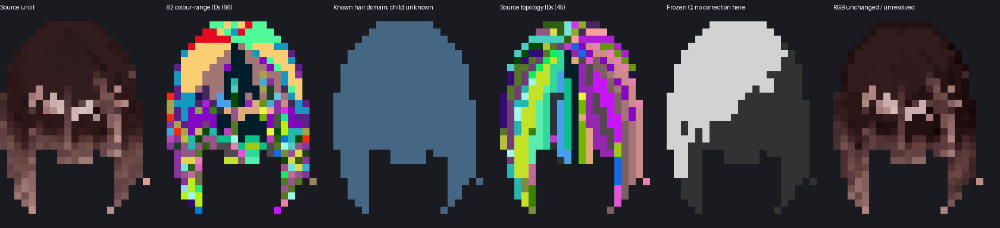
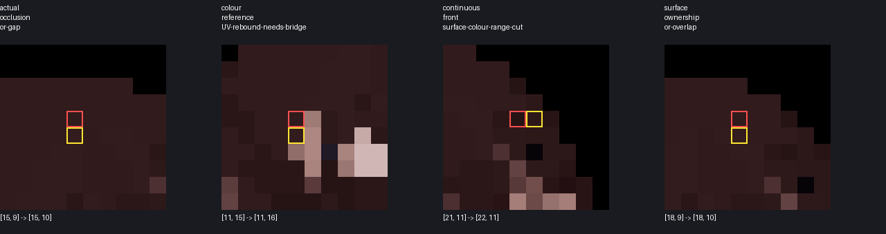
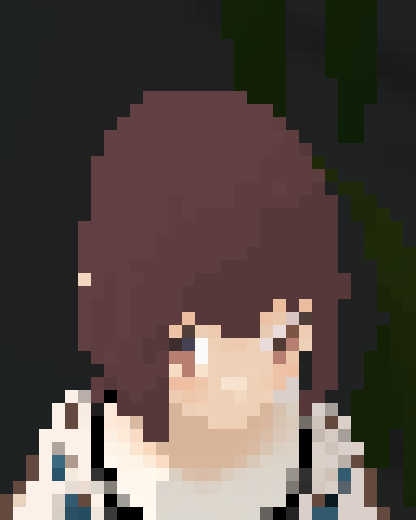

공간 보정 미완 / 현재373셀 RGB 변경0 / 62 미채택 유지.
실제 특징 경계보다 Lab 색 범위를 먼저 절단한 뒤 팔레트를 공급했고, 색 영역의 공유 경계 보정은 빠져 있었습니다. 이번 산출물은 그 원인 분류와 분리 adapter·경계 측정입니다. 개선된 새 렌더가 아닙니다.
실제 함수 순서·자료 공백·재사용 근거 · 분류 수치 · 검사 결과 · 분리한 영역 계획
원본색 / colour-range66 / 확정된 가시 머리 소속(하위 특징 미추출) / topology45 / 저장Q / 변경 없는62 RGB입니다. 가운데 단색은 단색 렌더 제안이 아니라 아직 하위 특징이 없다는 debug 표시입니다.

colour-range 경계460변·357경로와 Q 경계49변·2경로를 구분했습니다. 66 UV 영역은 화면186조각입니다. 37영역은 다른 원본 구조에 걸치며, 단일 구조의 화면 분리만 남는 영역은1개입니다. 66개별 근거.
아래는 다른 sourceId의 과거 반례입니다. 빨강·노랑 사각형이 각 비교 쌍입니다. 색 표본 UV와 기하 UV 재배치가 있는3경계는 별도 분류했습니다.

| 원인 | 쌍 |
|---|---|
| matched geometry의 가림/틈 | 72 |
| 표면 소유권 전환/겹침 | 15 |
| 같은 전면 표면의 색 범위 경계 | 50 |
| 색 UV 재배치 대응 별도 검증 | 3 |
matched geometry는 같은 capture 시각이 아니며 대응 오차를 기록했습니다. 위50쌍도 모두 삭제할 잡음이라고 판정하지 않았습니다. 140쌍 실제 수치.
예: (223,226)–(224,226), 원본 RGB(44,22,23)와 Q0이 같은데 출력은 (37,16,17)/(31,12,13)입니다. 전부 서로 다른 재질 사이의 range/anchor 차이입니다. .55 외곽 처리 전 수치입니다. 기하·영역 ID를 합쳐 숨기지 않았습니다.

기존 path4의 고정 source arclength 접선 오차 .203878→.171808, 최대 위치 이탈 .799878→.692588을 재계산했습니다. source-supported 결과도 여전히11영역/6단독 셀입니다. 이 Q 경계 보정을 현재 색 특징 영역 보정으로 대신하지 않습니다.
44 실제 재계산 · 373셀 공유 경계·run·회전 측정
현재 sourceId의 평가 정점·view/projection/grid/sample 위치와 원본 색 경계의 투영 대응이 없습니다. 원본 texture에서 특징/gradient의 계층을 추출하는 구현도 미완입니다. 다른 pose의 geometry나 이미 양자화한 계단을 원곡선으로 간주하지 않았습니다. 새 Unity 접근·제품 변경은 하지 않았습니다.